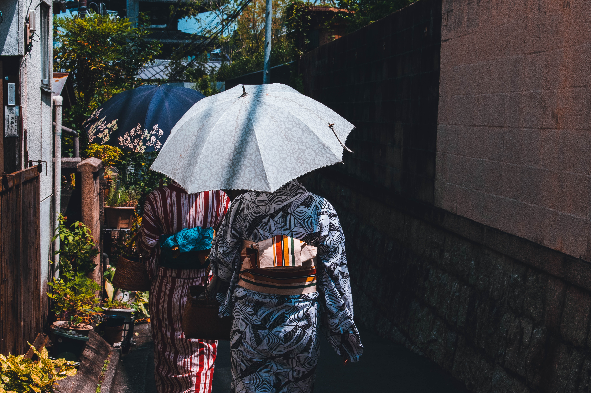

NihongoAr: Aprende y disfruta del japonés por tu cuenta
Si buscas contenido tanto para aprendizaje como entretenimiento del idioma Japonés como del país, haz llegado al lugar indicado.
Actualmente nos encontramos publicando la mejor info que podemos traerte en español.
Encuentra toda la información actualizada que necesitas, no dudes en consultar por más. Se valora el feedback!
Espero disfrutes de la página
Galería
Te compartimos una galería con imagenes destacadas de Japón


- 